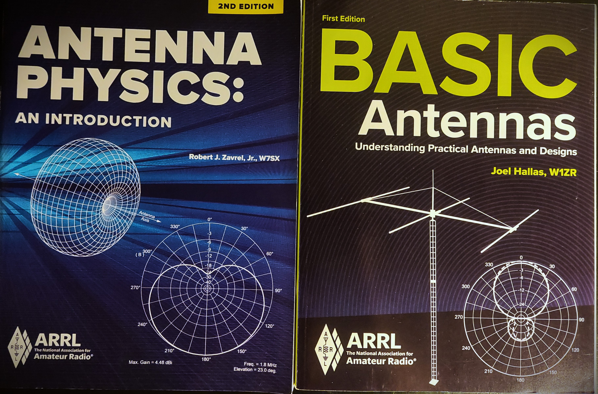
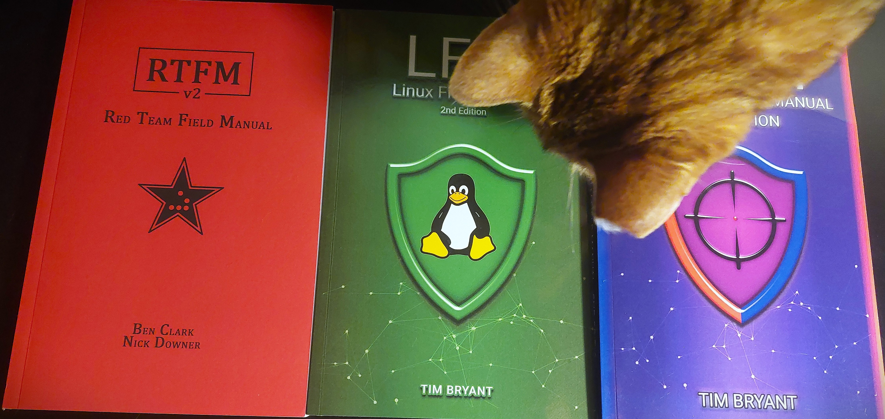
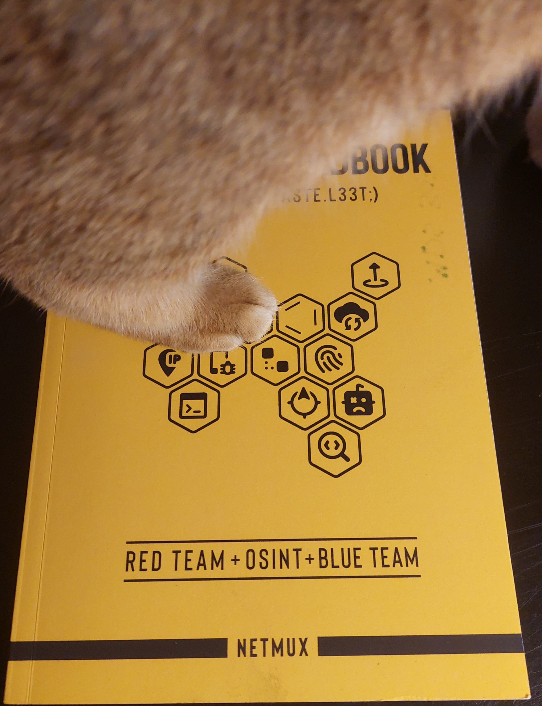
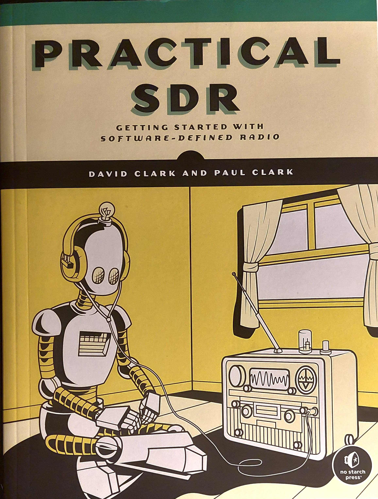

<main id="main" class="site-main">
  <article id="bookshelf" class="bookshelf page type-page status-publish hentry">
    <header class="entry-header">
      <h1 class="entry-title">Bookshelf</h1>
    </header>
    <div class="entry-content">
        <!-- Top banner image placeholder -->		 
        <!-- <div style="width: 100%; margin-bottom: 2rem;">
          
        </div> -->
        
        <!-- 2-column layout with 5 rows -->
        <div style="display: grid; grid-template-columns: 1fr 2fr; gap: 2rem; margin-bottom: 2rem;">
          <!-- Row 1 -->
          <div>
            
            <p style="margin-top: 0.5rem; font-style: italic; text-align: center;">Antenna Physics by R.J.Zavrel, and Basic Antennas by J.R. Hallas.</p>
          </div>
          <div>
            <ul>
              <li>R. J. Zavrel, Antenna Physics: An Introduction. 2020. (<a href="https://home.arrl.org/action/Store/Product-Details/productId/132743" target="_blank">https://home.arrl.org/action/Store/Product-Details/productId/132743</a>)</li>
              <li>J. R. Hallas, Basic antennas: understanding practical antennas and design. 2012. (<a href="https://home.arrl.org/action/Store/Product-Details/productId/114354" target="_blank">https://home.arrl.org/action/Store/Product-Details/productId/114354</a>)</li>
              <li>Two very accessible references that are easier to digest than popular (and also highly recommended) textbooks on the topic of practical antenna design for those needing a quick reference or to brush up on some functional knowledge. </li>
              <li>Good entry point on the topic, beginner information can also be skipped for those familiar with the topic. </li>
              <li>A detailed review can be <a href="https://lc-linkous.github.io/bookshelf/2025/08/05/bookshelf.html" target="_blank">found here.</a></li>
            </ul>
          </div>
        </div>

        <!-- Row 2 -->
        <div style="display: grid; grid-template-columns: 1fr 2fr; gap: 2rem; margin-bottom: 2rem;">
          <div>
            
            <p style="margin-top: 0.5rem; font-style: italic; text-align: center;">Red Team Field Manual, Linux Field Manual, Purple Team Manual. And Sybil</p>
          </div>
          <div>
            <ul>
              <li>B. Clark, N. Downer, RTFM: Red Team Field Manual v2. 2022. (<a href="https://www.amazon.com/RTFM-Red-Team-Field-Manual/dp/1075091837/" target="_blank">https://www.amazon.com/RTFM-Red-Team-Field-Manual/dp/1075091837/</a>)</li>
              <li>T. Bryant, LFM: Linux Field Manual. 2024. (<a href="https://www.amazon.com/dp/1736526782" target="_blank">https://www.amazon.com/dp/1736526782</a>)</li>
              <li>T. Bryant, PTFM, Purple Team Field Manual. 2024. (<a href="https://www.amazon.com/PTFM-2nd-Purple-Field-Manual/dp/1736526790/" target="_blank">https://www.amazon.com/PTFM-2nd-Purple-Field-Manual/dp/1736526790/</a>)</li>
              <li> Popular field guides great for quick reference, skimming for new research inspiration, and making notes.</li>
              <li> A detailed review can be <a href="https://lc-linkous.github.io/bookshelf/2025/08/07/bookshelf.html" target="_blank">found here.</a></li>
            </ul>
          </div>
        </div>

        <!-- Row 3 -->
        <div style="display: grid; grid-template-columns: 1fr 2fr; gap: 2rem; margin-bottom: 2rem;">
          <div>
            
            <p style="margin-top: 0.5rem; font-style: italic; text-align: center;">Operator Handbook by J. Picolet (with Netmux), featuring Sybil.</p>
          </div>
          <div>
            <ul>
              <li>J. Picolet, Operator Handbook: search.copy.paste.L33T;) : Red Team + OSINT + Blue Team. Herndon, Va: Netmux, 2020. 
              (<a href="https://www.amazon.com/Operator-Handbook-Team-OSINT-Reference/dp/B085RR67H5" target="_blank">https://www.amazon.com/Operator-Handbook-Team-OSINT-Reference/dp/B085RR67H5</a>)</li>
              <li> Reference guide including tools that work on Linux, Mac, and/or Windows. There’s a good sample of common tools, their usage, and room for notes.</li>
              <li>A detailed review can be <a href="https://lc-linkous.github.io/bookshelf/2025/08/09/bookshelf.html" target="_blank">found here.</a></li>
            </ul>
          </div>
        </div>

        <!-- Row 4 -->
        <div style="display: grid; grid-template-columns: 1fr 2fr; gap: 2rem; margin-bottom: 2rem;">
          <div>
            
            <p style="margin-top: 0.5rem; font-style: italic; text-align: center;">Practical SDR by D. Clark and P. Clark</p>
          </div>
          <div>
            <ul>
              <li>D. Clark and P. Clark, Practical SDR. No Starch Press, 2025. (<a href="https://nostarch.com/practical-sdr" target="_blank">https://nostarch.com/practical-sdr</a>)</li>
              <li>Very accessible book for introducing signal processing, SDRs, and real-world GNU radio examples that can be run without expensive equipment.</li>
              <li>A detailed review can be <a href="https://lc-linkous.github.io/bookshelf/2025/08/11/bookshelf.html" target="_blank">found here.</a></li>
            </ul>
          </div>
        </div>

        <!-- Row 5 -->
        <div style="display: grid; grid-template-columns: 1fr 2fr; gap: 2rem; margin-bottom: 2rem;">
          <div>
            
            <p style="margin-top: 0.5rem; font-style: italic; text-align: center;">Black Hat Bash by N. Aleks and D. Farhi.</p>
          </div>
          <div>
            <ul>
              <li>N. Aleks and D. Farhi, Black Hat Bash. NO STARCH PRESS, INC, 2024. (<a href="https://nostarch.com/black-hat-bash" target="_blank">https://nostarch.com/black-hat-bash</a>)</li>
              <li> Everything you ever wanted to know about practical bash scripting, and then some more fun facts with examples.</li>
              <li>A detailed review can be <a href="https://lc-linkous.github.io/bookshelf/2025/08/13/bookshelf.html" target="_blank">found here.</a></li>
            </ul>
          </div>
        </div>
   


    </div> <!-- .entry-content -->
  </article> <!-- #bookshelf -->
</main> <!-- .site-main -->